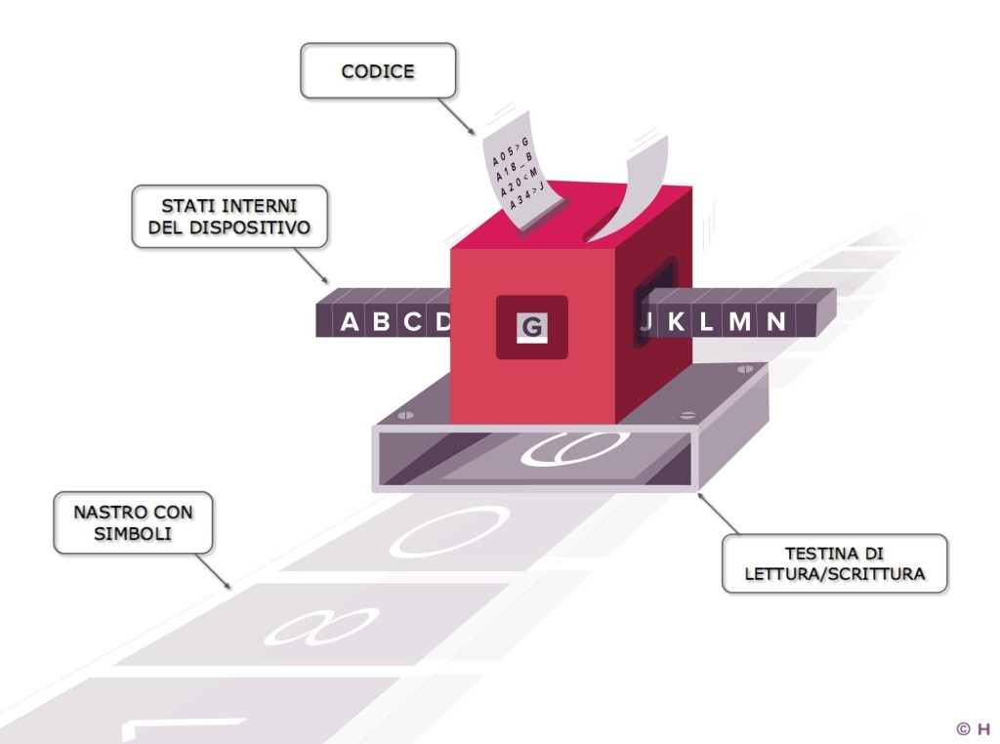

 La definizione (piuttosto informale) a cui di solito si approssima la macchina di Turing, è quella di una macchina composta da tre dispositivi:
Questo dispositivo di controllo è in grado di influenzare la macchina in due modi:
Per capire come spostare la testina lungo il nastro (o viceversa) e cosa scriverci, l'unità di controllo
necessita utilizza lo
"stato", indicato solitamente con una lettera, e che è rappresentativo della condizione attuale della macchina
(ad esempio "s" indica lo stato di partenza, quello in cui si trova la macchina all'avvio, "h" lo stato finale,
quello in cui si trova la macchina appena terminata la computazione).
Nel programma infatti non vengono indicate istruzioni sequenziali, ma coppie associate di stati (in cui la
macchina può trovarsi) e valori (caratteri appartenenti ad un alfabeto finito da leggere sul nastro), a cui
corrispondono istruzioni circa la scrittura del nastro, lo spostamento su di esso ed il cambiamento di stato
dell'unità di controllo, che dipendono, come appena visto, dal valore
letto dalla testina e dall'attuale stato in cui si trova l'unità di controllo.
Tale associazione, nel modello matematico (e formale) della macchina di turing, è mediata da una funzione
chiamata "funzione di associazione",
che ha come argomento una doppia stato-valore letto (q, x) e la associa ad una tripla nuovo stato-carattere di
scrittura-direzione di spostamento (q', x', d).
La MdT invoca la funzione di associazione ripetutamente, ogni volta usando come argomento il risultato della
precedente invocazione (la prima volta si usa la doppia (s, >) (stato iniziale, valore della prima cella del
nastro)), fintanto che non raggiunge uno degli stati cosidetti di "halt", al seguito della quale
viene cessata l'esecuzione, e lo stato attuale del nastro fornisce l'output.
Il programma, dunque, altro non è che una definzione per elencazione della funzione di associazione, dunque ogni
istruzione è rappresentata da una quintupla del tipo (q,x,q',x',d).
La definizione rigorosa della macchina di Turing (o meglio del suo modello matematico), allora, diventa la
seguente:
Si definisce Macchina di Turing una quintupla (K; L; f; s; H) dove
K è una collezione finita di stati interni
L è una collezione finita di simboli detta alfabeto che include anche i simboli * e >
s appartiene K, ed è lo stato iniziale
H incluso strettamente in K è insieme di stati finali detti stati di halt
f : (K - H) x L -> K x L x {<-, ->, -`} è detta funzione di transizione tale che:
(a) per ogni q appartenente ad H - K, se f(q; >) = (q0; x0; d) allora x0 = > e d = ->
(b) per ogni q appartenente ad H - K e per ogni x appartenente ad L, se f(q; x) = (q0; x0; d) allora x0 !=
>.
La macchina di Turing fu di estrema importanza per risolvere il famoso problema che cambiò per sempre la matematica: L'Halting Problem. L'Halting Problem è un problema che dimostra l'indecidibilità della matematica, ovvero che per un dato teorema, non v'è certezza che questo sia necessariamente deducibile dagli assiomi. Per dimostrarlo Turing presuppone l'opposto, ovvero che vi siano necessariamente dimostrazioni deducibili dagli assiomi. Se così fosse, queste potrebbero essere tutte ricavate mediante le regole di inferenza, applicabili ripetutamente a partire dagli assiomi per dimostrare tutti i teoremi. Dunque data una congettura da dimostrare, l'algoritmo in grado di dimostrarla dovrebbe partire dagli assiomi ed applicare ciclicamente le regole di inferenza per derivare tutti i teoremi fino a quello da dimostrare. Se il teorema fosse indimostrabile, l'algoritmo non terminerebbe mai. Assumiamo dunque che esista una MdT in grado di computare un algorimo capace di sapere se un programma vada o meno in halt su di un determinato input, e che questa esista sotto il nome di h. Fornendo l'algoritmo sopra descritto ed una congettura da dimostrare come input, la MdT sarebbe ingrado di dirci se tale congettura sia o meno decidibile. Aggiungiamo ad h un altro componente, che manda il loop la macchina se h restituisce "halt" e manda in halt il programma se h restituisce "not halt". Chiamiamo questo nuovo sistema "h+". Infine, forniamo ad h+ in input il suo stesso codice (sia come programma che come input per il programma) e noteremo che a qualunque conclusione giunga la macchina h, questa sarà sempre errata. Pertanto, una macchina come h no può esistere, e di conseguenza altrettanto inesistente è l'algoritmo in grado di prevedere l'esito dell'esecuzione di un programma su di un determinato input. Non siamo allora in grado di determinare la necessaria decidibilità di ogni teorema, provando la matematica indecidibile.